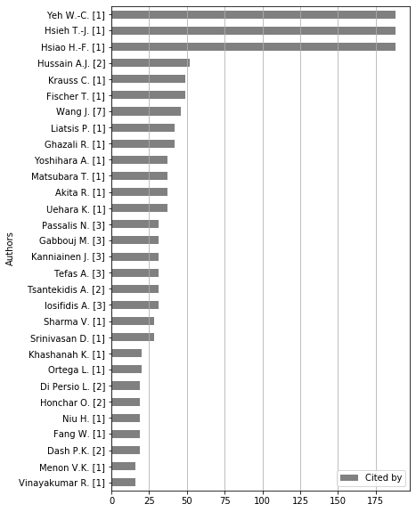
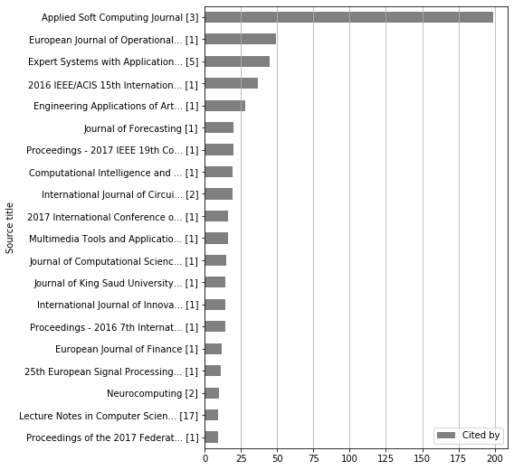
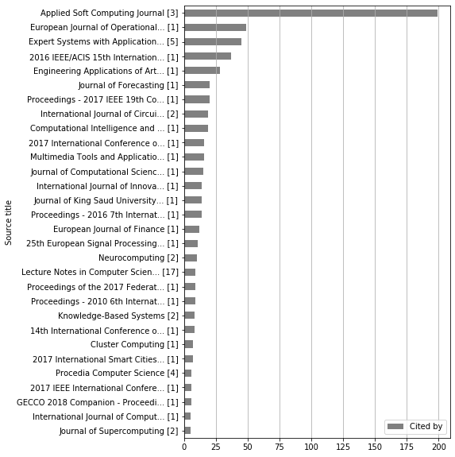

Analysis: Citations by terms¶
[1]:
import pandas as pd
from techminer import RecordsDataFrame
rdf = RecordsDataFrame(
pd.read_json(
'step-07.json',
orient='records',
lines=True))
Keywords¶
[2]:
rdf.citations_by_terms('keywords (cleaned)', sep=';', top_n=20)
[2]:
| keywords (cleaned) | Cited by | ID | |
|---|---|---|---|
| 0 | forecasting [108] | 613.0 | [[*4*], [*6*], [*11*], [*17*], [*18*], [*20*],... |
| 1 | deep learning [76] | 541.0 | [[*4*], [*19*], [*23*], [*25*], [*27*], [*50*]... |
| 2 | recurrent neural networks [52] | 459.0 | [[*2*], [*6*], [*11*], [*17*], [*20*], [*47*],... |
| 3 | artificial neural networks [62] | 425.0 | [[*4*], [*6*], [*17*], [*18*], [*19*], [*25*],... |
| 4 | commerce [61] | 414.0 | [[*4*], [*6*], [*19*], [*20*], [*23*], [*50*],... |
| 5 | finance [35] | 344.0 | [[*19*], [*20*], [*74*], [*106*], [*107*], [*1... |
| 6 | machine learning [35] | 316.0 | [[*6*], [*19*], [*24*], [*25*], [*27*], [*54*]... |
| 7 | Classifiers [6] | 280.0 | [[*6*], [*62*], [*139*], [*140*]] |
| 8 | Financial markets [68] | 273.0 | [[*4*], [*6*], [*11*], [*18*], [*20*], [*50*],... |
| 9 | stock markets [12] | 267.0 | [[*6*], [*27*], [*62*], [*70*], [*91*], [*137*... |
| 10 | embeddings [7] | 267.0 | [[*124*], [*139*], [*140*]] |
| 11 | time series [91] | 244.0 | [[*6*], [*11*], [*17*], [*18*], [*19*], [*24*]... |
| 12 | transaction [6] | 236.0 | [[*130*], [*136*], [*139*], [*140*]] |
| 13 | granger causality [4] | 235.0 | [[*130*], [*139*], [*140*]] |
| 14 | trading [65] | 232.0 | [[*4*], [*6*], [*11*], [*18*], [*19*], [*20*],... |
| 15 | Prediction [4] | 230.0 | [[*139*], [*140*]] |
| 16 | Market [3] | 230.0 | [[*139*], [*140*]] |
| 17 | Water [4] | 230.0 | [[*139*], [*140*]] |
| 18 | Time Series [3] | 230.0 | [[*139*], [*140*]] |
| 19 | Human [3] | 230.0 | [[*139*], [*140*]] |
[8]:
rdf.citations_by_terms('keywords (cleaned)', sep=';', top_n=20).barhplot(figsize=(6,8))

[9]:
rdf.citations_by_terms('Authors', sep=',', top_n=30).barhplot(figsize=(6,9))

[10]:
rdf.citations_by_terms('Source title', sep=None, top_n=30).barhplot(figsize=(6,10))

Authors¶
[14]:
rdf.citations_by_terms('Authors', sep=',', top_n=30)
[14]:
| Authors | Cited by | ID | |
|---|---|---|---|
| 0 | Yeh W.-C. [1] | 188.0 | [[*140*]] |
| 1 | Hsieh T.-J. [1] | 188.0 | [[*140*]] |
| 2 | Hsiao H.-F. [1] | 188.0 | [[*140*]] |
| 3 | Hussain A.J. [2] | 52.0 | [[*125*], [*139*]] |
| 4 | Krauss C. [1] | 49.0 | [[*62*]] |
| 5 | Fischer T. [1] | 49.0 | [[*62*]] |
| 6 | Wang J. [7] | 46.0 | [[*80*], [*87*], [*128*], [*128*]] |
| 7 | Liatsis P. [1] | 42.0 | [[*139*]] |
| 8 | Ghazali R. [1] | 42.0 | [[*139*]] |
| 9 | Yoshihara A. [1] | 37.0 | [[*124*]] |
| 10 | Matsubara T. [1] | 37.0 | [[*124*]] |
| 11 | Akita R. [1] | 37.0 | [[*124*]] |
| 12 | Uehara K. [1] | 37.0 | [[*124*]] |
| 13 | Passalis N. [3] | 31.0 | [[*110*], [*114*]] |
| 14 | Gabbouj M. [3] | 31.0 | [[*110*], [*114*]] |
| 15 | Kanniainen J. [3] | 31.0 | [[*110*], [*114*]] |
| 16 | Tefas A. [3] | 31.0 | [[*110*], [*114*]] |
| 17 | Tsantekidis A. [2] | 31.0 | [[*110*], [*114*]] |
| 18 | Iosifidis A. [3] | 31.0 | [[*110*], [*114*]] |
| 19 | Sharma V. [1] | 28.0 | [[*134*]] |
| 20 | Srinivasan D. [1] | 28.0 | [[*134*]] |
| 21 | Khashanah K. [1] | 20.0 | [[*132*]] |
| 22 | Ortega L. [1] | 20.0 | [[*132*]] |
| 23 | Di Persio L. [2] | 19.0 | [[*127*]] |
| 24 | Honchar O. [2] | 19.0 | [[*127*]] |
| 25 | Niu H. [1] | 19.0 | [[*128*]] |
| 26 | Fang W. [1] | 19.0 | [[*128*]] |
| 27 | Dash P.K. [2] | 19.0 | [[*112*], [*130*]] |
| 28 | Menon V.K. [1] | 16.0 | [[*106*]] |
| 29 | Vinayakumar R. [1] | 16.0 | [[*106*]] |
[12]:
rdf.citations_by_terms('Authors', sep=',', top_n=20).barhplot(figsize=(6,8))

[9]:
rdf.citations_by_terms('Authors', sep=',', top_n=30).barhplot(figsize=(6,9))

[13]:
rdf.citations_by_terms('Authors', sep=',', top_n=30).barhplot(figsize=(6,10))

Source title¶
[15]:
rdf.citations_by_terms('Source title', sep=None, top_n=30)
[15]:
| Source title | Cited by | ID | |
|---|---|---|---|
| 0 | Applied Soft Computing Journal [3] | 199.0 | [[*67*], [*80*], [*140*]] |
| 1 | European Journal of Operational... [1] | 49.0 | [[*62*]] |
| 2 | Expert Systems with Application... [5] | 45.0 | [[*11*], [*54*], [*139*]] |
| 3 | 2016 IEEE/ACIS 15th Internation... [1] | 37.0 | [[*124*]] |
| 4 | Engineering Applications of Art... [1] | 28.0 | [[*134*]] |
| 5 | Journal of Forecasting [1] | 20.0 | [[*132*]] |
| 6 | Proceedings - 2017 IEEE 19th Co... [1] | 20.0 | [[*114*]] |
| 7 | International Journal of Circui... [2] | 19.0 | [[*127*]] |
| 8 | Computational Intelligence and ... [1] | 19.0 | [[*128*]] |
| 9 | 2017 International Conference o... [1] | 16.0 | [[*106*]] |
| 10 | Multimedia Tools and Applicatio... [1] | 16.0 | [[*113*]] |
| 11 | Journal of Computational Scienc... [1] | 15.0 | [[*104*]] |
| 12 | Journal of King Saud University... [1] | 14.0 | [[*112*]] |
| 13 | International Journal of Innova... [1] | 14.0 | [[*137*]] |
| 14 | Proceedings - 2016 7th Internat... [1] | 14.0 | [[*116*]] |
| 15 | European Journal of Finance [1] | 12.0 | [[*142*]] |
| 16 | 25th European Signal Processing... [1] | 11.0 | [[*110*]] |
| 17 | Neurocomputing [2] | 10.0 | [[*125*]] |
| 18 | Lecture Notes in Computer Scien... [17] | 9.0 | [[*88*], [*96*], [*100*], [*102*], [*119*], [*... |
| 19 | Proceedings of the 2017 Federat... [1] | 9.0 | [[*107*]] |
| 20 | Proceedings - 2010 6th Internat... [1] | 9.0 | [[*143*]] |
| 21 | Knowledge-Based Systems [2] | 8.0 | [[*4*], [*25*]] |
| 22 | 14th International Conference o... [1] | 8.0 | [[*115*]] |
| 23 | Cluster Computing [1] | 7.0 | [[*117*]] |
| 24 | 2017 International Smart Cities... [1] | 7.0 | [[*109*]] |
| 25 | Procedia Computer Science [4] | 6.0 | [[*91*]] |
| 26 | 2017 IEEE International Confere... [1] | 6.0 | [[*81*]] |
| 27 | GECCO 2018 Companion - Proceedi... [1] | 6.0 | [[*70*]] |
| 28 | International Journal of Comput... [1] | 5.0 | [[*130*]] |
| 29 | Journal of Supercomputing [2] | 5.0 | [[*135*]] |
[16]:
rdf.citations_by_terms('Source title', sep=None, top_n=10).barhplot(figsize=(6,8))

[17]:
rdf.citations_by_terms('Source title', sep=None, top_n=20).barhplot(figsize=(6,9))

[18]:
rdf.citations_by_terms('Source title', sep=None, top_n=30).barhplot(figsize=(6,10))

Keywords¶
[19]:
rdf.citations_by_terms('keywords (cleaned)', sep=';', top_n=30)
[19]:
| keywords (cleaned) | Cited by | ID | |
|---|---|---|---|
| 0 | forecasting [108] | 613.0 | [[*4*], [*6*], [*11*], [*17*], [*18*], [*20*],... |
| 1 | deep learning [76] | 541.0 | [[*4*], [*19*], [*23*], [*25*], [*27*], [*50*]... |
| 2 | recurrent neural networks [52] | 459.0 | [[*2*], [*6*], [*11*], [*17*], [*20*], [*47*],... |
| 3 | artificial neural networks [62] | 425.0 | [[*4*], [*6*], [*17*], [*18*], [*19*], [*25*],... |
| 4 | commerce [61] | 414.0 | [[*4*], [*6*], [*19*], [*20*], [*23*], [*50*],... |
| 5 | finance [35] | 344.0 | [[*19*], [*20*], [*74*], [*106*], [*107*], [*1... |
| 6 | machine learning [35] | 316.0 | [[*6*], [*19*], [*24*], [*25*], [*27*], [*54*]... |
| 7 | Classifiers [6] | 280.0 | [[*6*], [*62*], [*139*], [*140*]] |
| 8 | Financial markets [68] | 273.0 | [[*4*], [*6*], [*11*], [*18*], [*20*], [*50*],... |
| 9 | stock markets [12] | 267.0 | [[*6*], [*27*], [*62*], [*70*], [*91*], [*137*... |
| 10 | embeddings [7] | 267.0 | [[*124*], [*139*], [*140*]] |
| 11 | time series [91] | 244.0 | [[*6*], [*11*], [*17*], [*18*], [*19*], [*24*]... |
| 12 | transaction [6] | 236.0 | [[*130*], [*136*], [*139*], [*140*]] |
| 13 | granger causality [4] | 235.0 | [[*130*], [*139*], [*140*]] |
| 14 | trading [65] | 232.0 | [[*4*], [*6*], [*11*], [*18*], [*19*], [*20*],... |
| 15 | Prediction [4] | 230.0 | [[*139*], [*140*]] |
| 16 | Market [3] | 230.0 | [[*139*], [*140*]] |
| 17 | Water [4] | 230.0 | [[*139*], [*140*]] |
| 18 | Time Series [3] | 230.0 | [[*139*], [*140*]] |
| 19 | Human [3] | 230.0 | [[*139*], [*140*]] |
| 20 | algorithms [14] | 225.0 | [[*2*], [*47*], [*109*], [*111*], [*129*], [*1... |
| 21 | stock [3] | 204.0 | [[*133*], [*137*], [*140*]] |
| 22 | wavelet transform [1] | 188.0 | [[*140*]] |
| 23 | wavelet transforms [4] | 188.0 | [[*140*]] |
| 24 | long short-term memory neural n... [54] | 166.0 | [[*4*], [*6*], [*24*], [*50*], [*62*], [*74*],... |
| 25 | feedforward neural networks [24] | 148.0 | [[*2*], [*47*], [*62*], [*67*], [*74*], [*88*]... |
| 26 | time series forecasting [43] | 141.0 | [[*4*], [*6*], [*11*], [*20*], [*80*], [*81*],... |
| 27 | stock forecasting [34] | 139.0 | [[*4*], [*11*], [*18*], [*20*], [*50*], [*74*]... |
| 28 | forecasting accuracy [22] | 123.0 | [[*4*], [*20*], [*81*], [*106*], [*110*], [*11... |
| 29 | financial time series [38] | 118.0 | [[*6*], [*18*], [*19*], [*47*], [*50*], [*54*]... |
[20]:
rdf.citations_by_terms('keywords (cleaned)', sep=';', top_n=10).barhplot(figsize=(6,8))

[21]:
rdf.citations_by_terms('keywords (cleaned)', sep=';', top_n=20).barhplot(figsize=(6,9))

[22]:
rdf.citations_by_terms('keywords (cleaned)', sep=';', top_n=30).barhplot(figsize=(6,10))

[ ]: